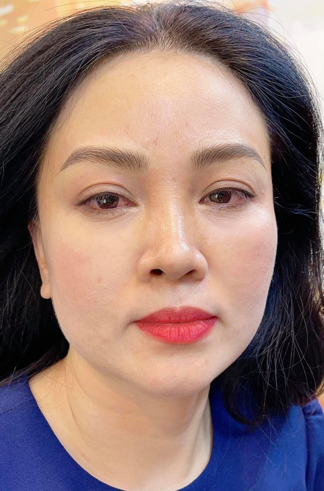
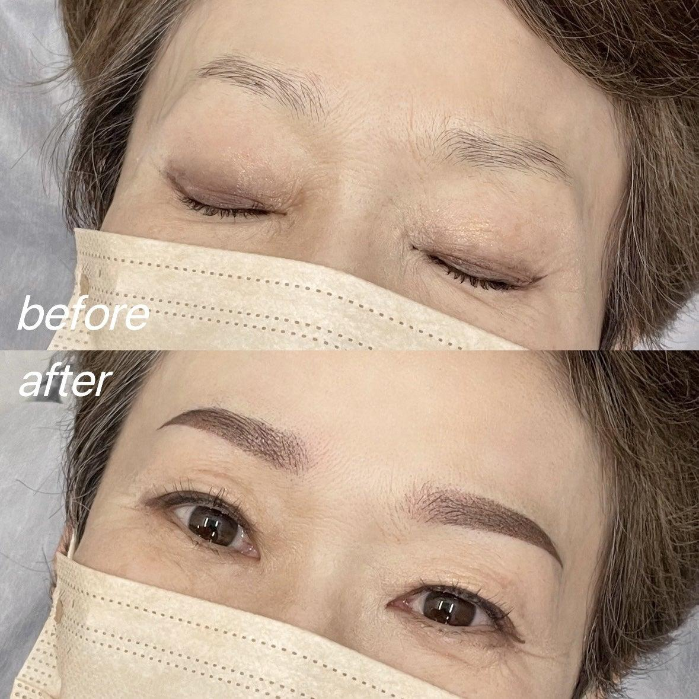

Người Lớn Tuổi Nên Chọn Kiểu Chân Mày Nào Để Gương Mặt Trẻ Trung Hơn?
Khi tuổi tác tăng lên, chân mày thường trở nên thưa, nhạt màu và mất đi đường nét tự nhiên. Điều này khiến khuôn mặt trông kém tươi tắn và già hơn so với tuổi thật.
Nhiều cô chú tìm đến phun xăm thẩm mỹ với mong muốn cải thiện diện mạo nhưng lại băn khoăn không biết nên chọn dáng mày nào để vừa đẹp, vừa tự nhiên.
Vì Sao Người Lớn Tuổi Nên Chăm Sóc Chân Mày?
Theo thời gian, cơ thể giảm sản sinh collagen khiến vùng mắt và chân mày thay đổi rõ hơn. Chân mày có thể thưa dần, lông mày bạc màu, đuôi mày rụng, da mí mắt chảy xệ và gương mặt thiếu sức sống.
Một dáng chân mày phù hợp có thể giúp gương mặt sáng hơn, trẻ trung hơn, tạo cảm giác mắt mở rộng và giảm nhu cầu trang điểm mỗi ngày.
Tiêu Chí Chọn Chân Mày Cho Người Lớn Tuổi
Không phải dáng mày nào đang thịnh hành cũng phù hợp. Người lớn tuổi nên ưu tiên:
- Đường mày mềm mại.
- Độ cong nhẹ, không quá sắc.
- Màu sắc tự nhiên, không quá đậm.
- Dáng mày hài hòa với mắt, trán và gò má.
Mục tiêu là giúp gương mặt hài hòa thay vì tạo cảm giác dữ, cứng hoặc quá khác so với bình thường.
Những Kiểu Chân Mày Đẹp Cho Người Lớn Tuổi
1. Chân mày cong nhẹ tự nhiên
Đây là dáng mày được nhiều khách hàng trung niên lựa chọn vì giúp gương mặt hiền hơn, đôi mắt có chiều sâu và không bị lỗi thời.
2. Chân mày ngang cong nhẹ
Đây không phải là mày ngang Hàn Quốc quá thẳng. Dáng này có đầu mày hơi ngang, đuôi cong nhẹ và đường nét mềm mại, phù hợp với đa số khuôn mặt người Việt.
3. Chân mày Ombre tự nhiên
Hiệu ứng chuyển màu giúp chân mày không bị cứng, nhìn giống trang điểm nhẹ và phù hợp với khách thích vẻ đẹp thanh lịch.


Người Lớn Tuổi Có Nên Chọn Mày Quá Đậm?
Câu trả lời là không nên. Màu quá đậm dễ khiến gương mặt dữ hơn, trông già hơn và thiếu tự nhiên.
Thông thường, khách lớn tuổi nên chọn các tông như nâu tự nhiên, nâu lạnh hoặc nâu chocolate. Kỹ thuật viên sẽ tư vấn màu phù hợp với màu tóc, màu da và phong cách thường ngày.
Có Nên Điêu Khắc Không?
Điêu khắc vẫn có thể thực hiện nếu da không quá dầu và lông mày còn tương đối. Tuy nhiên với nhiều khách hàng lớn tuổi, phun Nano hoặc Ombre thường mang lại hiệu quả ổn định hơn.
Lý do là hai kỹ thuật này tạo nền mày mềm, giúp che khuyết điểm mày thưa tốt hơn và không phụ thuộc quá nhiều vào từng sợi lông mày thật.
Những Sai Lầm Thường Gặp
Một số trường hợp khiến kết quả chưa đẹp là chọn dáng mày quá trẻ, chọn màu quá đen, làm theo xu hướng hoặc không đo tỷ lệ khuôn mặt trước khi thực hiện.
Một đôi chân mày đẹp là đôi chân mày phù hợp với chính khuôn mặt của bạn, chứ không phải sao chép hoàn toàn từ người khác.
ELLY PMU Thiết Kế Dáng Mày Như Thế Nào?
Tại ELLY PMU, mỗi khách hàng đều được phân tích khuôn mặt, đo tỷ lệ chân mày, vẽ thử trước khi thực hiện và điều chỉnh đến khi khách hài lòng.
Chỉ khi khách đồng ý với dáng mày, kỹ thuật viên mới tiến hành phun xăm. Điều này giúp hạn chế tình trạng làm xong bị quá đậm, quá sắc hoặc không hợp tuổi.
Checklist Trước Khi Phun Mày
✅ Chọn cơ sở uy tín.
✅ Không chạy theo xu hướng.
✅ Chọn màu phù hợp với tuổi.
✅ Ưu tiên sự tự nhiên.
✅ Tham khảo ý kiến kỹ thuật viên.
Câu Hỏi Thường Gặp
60 tuổi có phun mày được không?
Hoàn toàn được nếu sức khỏe ổn định và không có chống chỉ định từ bác sĩ.
Người lớn tuổi nên chọn màu gì?
Thường nên chọn nâu tự nhiên, nâu chocolate hoặc nâu lạnh. Không nên chọn màu đen quá đậm.
Bao lâu cần dặm lại?
Thông thường từ 2-4 năm, tùy cơ địa, kỹ thuật thực hiện và cách chăm sóc.
Có đau nhiều không?
Công nghệ hiện nay kết hợp ủ tê giúp quá trình thực hiện khá nhẹ nhàng, đa số khách hàng chỉ cảm thấy hơi châm chích.
Kết Luận
Một đôi chân mày đẹp không chỉ giúp khuôn mặt hài hòa mà còn mang lại sự tự tin trong cuộc sống hằng ngày. Với người lớn tuổi, tiêu chí quan trọng nhất không phải là chạy theo xu hướng mà là lựa chọn dáng mày phù hợp với đường nét khuôn mặt và độ tuổi.